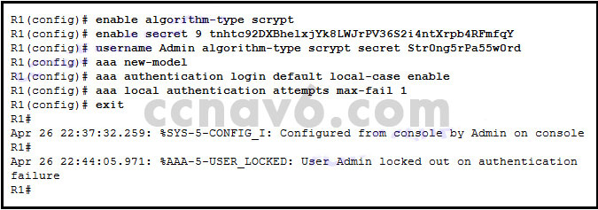
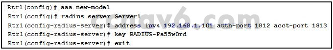

1.Un usuario se queja de no poder acceder a un dispositivo de red configurado con AAA. ¿Cómo determinaría el administrador de la red si el acceso de inicio de sesión para la cuenta de usuario está deshabilitado?
- Use el comando de bloqueo del usuario local de mostrar aaa. *
- Use el comando show running-configuration.
- Utilice el comando show aaa session.
- Utilice el comando de usuario show aaa.
- @Javi__Super
El comando show aaa local user lockout proporciona a un administrador una lista de las cuentas de usuario que están bloqueadas y no se pueden usar para la autenticación. Este comando también proporciona la fecha y la marca de tiempo de la ocurrencia del bloqueo.
2.Cuando se configura una lista de métodos para la autenticación AAA, ¿cuál es el efecto de la palabra clave local?
- El inicio de sesión se realiza correctamente, incluso si todos los métodos devuelven un error.
- Utiliza la contraseña de habilitación para la autenticación.
- Por defecto, la contraseña de la línea vty para la autenticación.
- Acepta un nombre de usuario configurado localmente, independientemente del caso *
- @Javi__Super
Al definir la lista de métodos de autenticación AAA, una opción es usar una base de datos local preconfigurada. Hay dos palabras clave, cualquiera de las cuales habilita la autenticación local a través de la base de datos local preconfigurada. La palabra clave local acepta un nombre de usuario independientemente del caso, y la palabra clave local-mayúscula distingue entre mayúsculas y minúsculas tanto para los nombres de usuario como para las contraseñas.
3.¿Qué solución admite AAA para los servidores RADIUS y TACACS +?
- Implemente solo el Sistema de control de acceso seguro (ACS) de Cisco. *
- Los servidores RADIUS y TACACS + no pueden ser soportados por una sola solución.
- Implementar una base de datos local.
- Implementar tanto una base de datos local como Cisco Secure
- @Javi__Super
El Sistema de control de acceso seguro (ACS) de Cisco es compatible con los servidores TACACS + y RADIUS. Las bases de datos locales no utilizan estos servidores.
4.¿Qué diferencia hay al usar Windows Server como un servidor AAA, en lugar de Cisco Secure ACS?
- Windows Server requiere más comandos de Cisco IOS para configurar.
- Windows Server solo admite AAA utilizando TACACS.
- Windows Server utiliza su propio controlador de Active Directory (AD) para la autenticación y autorización. *
- Windows Server no se puede utilizar como un servidor AAA.
- @Javi__Super
La configuración de Cisco IOS es la misma ya sea que se comunique con un servidor AAA de Windows o con cualquier otro servidor RADIUS.
5.Cuando se utiliza la autenticación 802.1X, ¿qué dispositivo controla el acceso físico a la red, según el estado de autenticación del cliente?
- El enrutador que sirve como puerta de enlace predeterminada
- el servidor de autentificación
- El interruptor al que está conectado el cliente *
- el suplicante
- @Javi__Super
Los dispositivos involucrados en el proceso de autenticación 802.1X son los siguientes:
El suplicante, que es el cliente que solicita el acceso a la red.
El autenticador, que es el interruptor al que el cliente se está conectando y que en realidad está controlando el acceso físico a la red.
El servidor de autenticación, que realiza la autentificación real
6.Debido a los controles de seguridad implementados, un usuario solo puede acceder a un servidor con FTP. ¿Qué componente AAA logra esto?
- contabilidad
- accesibilidad
- autorización *
- autenticación
- @Javi__Super
Uno de los componentes en AAA es la autorización. Una vez que un usuario se autentica a través de AAA, los servicios de autorización determinan a qué recursos puede acceder el usuario y a qué operaciones puede realizar el usuario.
7.¿Por qué se prefiere la autenticación con AAA a un método de base de datos local?
- Proporciona un método de autenticación de respaldo si el administrador olvida el nombre de usuario o la contraseña. *
- Utiliza menos ancho de banda de red.
- Especifica una contraseña diferente para cada línea o puerto.
- Requiere una combinación de inicio de sesión y contraseña en la consola, líneas vty y puertos aux.
- @Javi__Super
El método de autenticación de la base de datos local no proporciona un método de autenticación de reserva si un administrador olvida el nombre de usuario o la contraseña. La recuperación de la contraseña será la única opción. Cuando se utiliza la autenticación con AAA, se puede configurar un método de reserva para permitir que un administrador utilice uno de los muchos métodos de autenticación de copia de seguridad posibles.
8.¿Cuál es una característica de TACACS +?
- TACACS + usa el puerto UDP 1645 o 1812 para la autenticación, y el puerto UDP 1646 o 1813 para la contabilidad.
- TACACS + es compatible con versiones anteriores de TACACS y XTACS.
- TACACS + es un estándar abierto de IETF.
- TACACS + proporciona la autorización de los comandos del enrutador por usuario o por grupo. *
- @Javi__Super
El protocolo TACACS + proporciona flexibilidad en los servicios AAA. Por ejemplo, al usar TACACS +, los administradores pueden seleccionar las políticas de autorización que se aplicarán por usuario o por grupo.
9.Consulte la presentación. El enrutador R1 se ha configurado como se muestra, con el mensaje de registro resultante. Sobre la base de la información que se presenta, ¿qué dos afirmaciones describen el resultado de la operación de autenticación AAA? (Escoge dos.)

- El usuario bloqueado permanece bloqueado hasta que se emite el comando de administrador del usuario local bloqueado aaa. *
- El usuario bloqueado falló en la autenticación. *
- El usuario bloqueado debería haber utilizado el nombre de usuario admin y la contraseña Str0ngPa55w0rd.
- El usuario bloqueado está bloqueado por 10 minutos de forma predeterminada.
- @Javi__Super
El comando max-fail de los intentos de autenticación local aaa asegura las cuentas de usuario AAA bloqueando las cuentas que tienen demasiados intentos fallidos. Una vez que se alcanza la condición, la cuenta de usuario se bloquea. La cuenta de usuario en efecto permanece bloqueada hasta que un administrador borra el estado.
10.Un usuario se queja de estar bloqueado de un dispositivo después de demasiados intentos fallidos de inicio de sesión en AAA. ¿Qué podría usar el administrador de red para proporcionar un método de acceso de autenticación seguro sin bloquear a un usuario de un dispositivo?
- Utilice el comando de retraso de inicio de sesión para intentos de autenticación. *
- Utilice el comando local de inicio de sesión para autenticar el acceso del usuario.
- Utilice el comando de modo de configuración global max-fail de los intentos de autenticación aaa con un número mayor de fallos aceptables.
- Utilice la palabra clave none al configurar la lista de métodos de autenticación.
- @Javi__Super
El comando de retraso de inicio de sesión introduce un retraso entre los intentos fallidos de inicio de sesión sin bloquear la cuenta. Esto proporciona a un usuario intentos ilimitados de acceder a un dispositivo sin que la cuenta de usuario se bloquee y, por lo tanto, requiera la intervención del administrador.
11.¿Qué comando de depuración se usa para centrarse en el estado de una conexión TCP cuando se usa TACACS + para la autenticación?
- eventos debug tacacs *
- debac tacacs
- debug tacacs contabilidad
- depurar la autenticación aaa
- @Javi__Super
El comando debug tacacs events muestra la apertura y el cierre de una conexión TCP a un servidor TACACS +, los bytes que se leen y escriben sobre la conexión y el estado TCP de la conexión.
12.¿Qué característica es un aspecto importante de la autorización en un dispositivo de red habilitado para AAA?
- La función de autorización mejora el rendimiento de la red.
- El acceso de usuarios está restringido a ciertos servicios. *
- Las acciones del usuario se registran para su uso en auditorías y eventos de solución de problemas.
- Un usuario debe ser identificado antes de conceder el acceso a la red.
- @Javi__Super
La autorización es la capacidad de controlar el acceso de los usuarios a servicios específicos. La autenticación se utiliza para verificar la identidad del usuario. La característica de contabilidad registra las acciones del usuario una vez que el usuario está autenticado y autorizado.
13.¿Cuál es el resultado de ingresar el comando de red contable aaa en un enrutador?
- El enrutador recopila e informa los datos de uso relacionados con las solicitudes de servicio relacionadas con la red. *
- El enrutador genera datos de contabilidad para todas las sesiones de shell EXEC.
- El enrutador proporciona datos solo para solicitudes de servicio internas.
- El enrutador genera datos de contabilidad para todas las conexiones salientes, como SSH y Telnet.
- @Javi__Super
Los tres parámetros que se pueden usar con la contabilidad aaa son: la
red ejecuta la contabilidad de todas las solicitudes de servicio relacionadas con la red, incluidas las
ejecuciones de PPP, la contabilidad de todas las
conexiones de la sesión de shell de EXEC : se ejecuta la contabilidad de todas las conexiones salientes, como SSH y Telnet Al aire libre
14.¿Cuál es una característica de la contabilidad AAA?
- Los posibles desencadenantes para el comando predeterminado aaa accounting exec incluyen start-stop y stop-only. *
- La contabilidad solo se puede habilitar para las conexiones de red.
- La contabilidad se ocupa de permitir y no permitir el acceso de usuarios autenticados a ciertas áreas y programas en la red.
- No se requiere que los usuarios se autentiquen antes de que la contabilidad AAA registre sus actividades en la red.
- @Javi__Super
La contabilidad AAA permite el seguimiento del uso, como el acceso telefónico y la sesión del shell EXEC, para registrar los datos recopilados en una base de datos y generar informes sobre los datos recopilados. La configuración de la contabilidad AAA con la palabra clave Start-Stop desencadena el proceso de enviar un aviso contable de "inicio" al comienzo de un proceso y un aviso contable de "parada" al final de un proceso. La contabilidad AAA no se limita a las actividades de conexión de red. La contabilidad AAA está vigente, si está habilitada, después de que un usuario se haya autenticado correctamente. Permitir y no permitir el acceso de los usuarios es el alcance de la autorización AAA.
15.El método de autenticación almacena los nombres de usuario y las contraseñas en el enrutador y es ideal para redes pequeñas.
- AAA local sobre TACACS +
- basado en servidor AAA sobre TACACS +
- local AAA *
- AAA local sobre RADIUS
- @Javi__Super
16.¿Qué componente de AAA le permite a un administrador rastrear a las personas que acceden a los recursos de la red y cualquier cambio que se realice en esos recursos?
- contabilidad *
- accesibilidad
- autenticación
- autorización
- @Javi__Super
Uno de los componentes en AAA es la contabilidad. Después de que un usuario se autentica a través de AAA, los servidores AAA mantienen un registro detallado de exactamente qué acciones realiza el usuario autenticado en el dispositivo.
17.¿Qué dos características están incluidas en los protocolos TACACS + y RADIUS? (Escoge dos.)
- Soporte 802.1X
- Procesos de autenticación y autorización separados
- Utilización de protocolos de capa de transporte *
- cifrado de contraseña *
- @Javi__Super
Tanto TACACS + como RADIUS admiten el cifrado de contraseñas (TACACS + cifra todas las comunicaciones) y usan el protocolo de Capa 4 (TACACS + usa TCP y RADIUS usa UDP). TACACS + admite la separación de procesos de autenticación y autorización, mientras que RADIUS combina la autenticación y la autorización como un proceso. RADIUS es compatible con la tecnología de acceso remoto, como 802.1x y SIP; TACACS + no lo hace.
18.¿Qué protocolo de autenticación basado en servidor sería el mejor para una organización que desea aplicar políticas de autorización por grupo?
- SSH
- RADIO
- ACS
- TACACS+ *
- @Javi__Super
TACACS + se considera más seguro que RADIUS porque todo el tráfico de TACACS + está cifrado en lugar de solo la contraseña del usuario cuando se usa RADIUS.
19.Consulte la presentación. ¿Qué enunciado describe la configuración de los puertos para Server1?

- La configuración utilizando los puertos predeterminados para un router Cisco.
- La configuración de los puertos requiere que se utilice 1812 para la autenticación y los puertos de autorización.
- La configuración no estará activa hasta que se guarde y Rtr1 se reinicie.
- Los puertos configurados para Server1 en el enrutador deben ser idénticos a los configurados en el servidor RADIUS. *
- @Javi__Super
Los enrutadores Cisco, de forma predeterminada, usan el puerto 1645 para la autenticación y el puerto 1646 para la contabilidad. En la salida de configuración, la configuración de los puertos de autenticación y autorización RADIUS debe coincidir en el enrutador Rtr1 y Server1.
20.¿Verdadero o falso?
La palabra clave de conexión única evita la configuración de varios servidores TACACS + en un enrutador habilitado para AAA.
- falso *
- cierto
- @Javi__Super
La palabra clave de conexión única mejora el rendimiento de TCP al mantener una conexión TCP única durante toda la sesión. La palabra clave no impide la configuración de varios servidores TACACS +.
21.¿Por qué un administrador de red incluiría una configuración de nombre de usuario local, cuando el enrutador habilitado para AAA también está configurado para autenticarse usando varios servidores ACS?
- Debido a que los servidores ACS solo admiten el acceso de usuarios remotos, los usuarios locales solo pueden autenticarse utilizando una base de datos de nombre de usuario local.
- Se requiere una base de datos de nombre de usuario local para configurar la autenticación mediante servidores ACS.
- La base de datos de nombre de usuario local proporcionará una copia de seguridad para la autenticación en caso de que los servidores de ACS no estén disponibles. *
- Sin una base de datos de nombre de usuario local, el enrutador requerirá una autenticación exitosa con cada servidor ACS.
- @Javi__Super
La base de datos de nombre de usuario local puede servir como un método de respaldo para la autenticación si no hay servidores de ACS disponibles.
22.¿Qué método de autenticación almacena los nombres de usuario y las contraseñas en el enrutador y es ideal para redes pequeñas?
- local AAA *
- basado en servidor AAA
- basado en servidor AAA sobre TACACS +
- AAA local sobre TACACS +
- @Javi__Super
En una red pequeña con unos pocos dispositivos de red, la autenticación AAA se puede implementar con la base de datos local y con los nombres de usuario y las contraseñas almacenados en los dispositivos de red. La autenticación mediante el protocolo TACACS + o RADIUS requerirá servidores ACS dedicados, aunque esta solución de autenticación se adapta bien en una red grande.
23.¿Qué dispositivo se considera un suplicante durante el proceso de autenticación 802.1X?
- El cliente que está solicitando autenticación *
- El enrutador que sirve como puerta de enlace predeterminada
- El servidor de autenticación que está realizando la autenticación del cliente.
- CITY
- @Javi__Super
Los dispositivos involucrados en el proceso de autenticación 802.1X son los siguientes:
El suplicante, que es el cliente que solicita el acceso a la red.
El autenticador, que es el interruptor al que el cliente se está conectando y que en realidad está controlando el acceso físico a la red.
El servidor de autenticación. que realiza la autenticación real
24.¿Qué protocolo se usa para encapsular los datos EAP entre el autenticador y el servidor de autenticación que realiza la autenticación 802.1X?
- SSH
- MD5
- TACACS +
- RADIO *
- @Javi__Super
La encapsulación de datos EAP entre el autenticador y el servidor de autenticación se realiza mediante RADIUS.